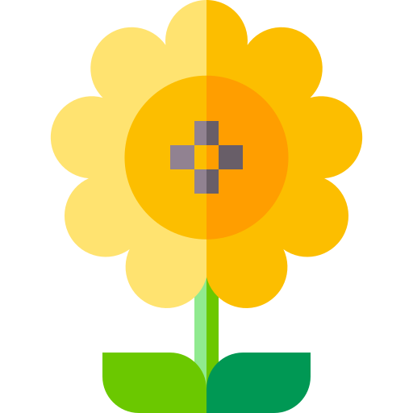
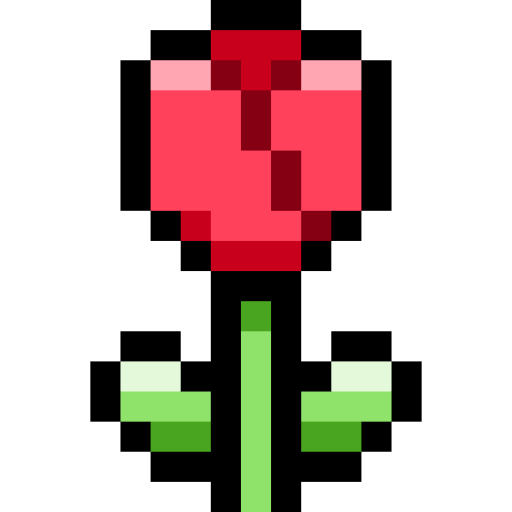
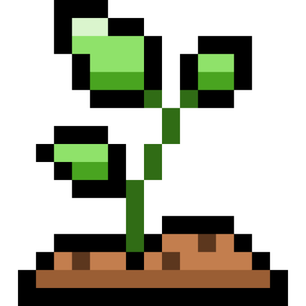

在日历和记录中显示经期追踪功能
删除所有日常记录和旬目标，但保留设置和自定义标签
删除所有数据包括设置，恢复到全新状态
今天的你，更接近哪种状态？
回顾一下今天的状态：
今天有哪些情绪出现？
正在加载今日金句...
—— 佚名
状态已经记录下来了，可以继续写一点今天的经历。
将所有数据下载为 JSON 文件，以防丢失。
从备份文件恢复数据。注意：这将覆盖当前所有数据。
数据变更时自动保存最近7份快照
暂无快照记录
小提示：在上方日历中 点击或长按任意日期，可以标记经期开始、结束，或清除该日标记。
平均周期: -- 天
平均持续: -- 天
平均间隔: -- 天 (最近2-3次起始间隔的加权平均)